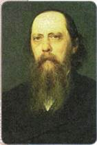
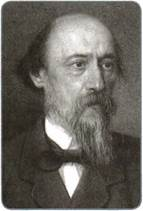
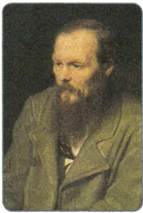
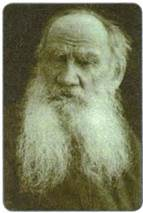
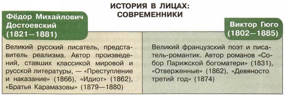

Материал для самостоятельной работы и проектной деятельности учащихся
Почему русская литература второй половины XIX в. оказывала и продолжает оказывать огромное влияние на мысли и чувства людей во всём мире?
1. Золотой век русской литературы
Во второй половине XIX в. в России творили немало писателей, чьи произведения носили скорее публицистический, нежели художественный характер, удовлетворяя насущные потребности читателя в чётких ответах на жгучие вопросы жизни. Самой яркой фигурой из них был Н. Г. Чернышевский, чей роман «Что делать?» пользовался огромной популярностью. В 60—70-х гг. XIX в. большую известность имели многие произведения, привлекавшие читателей не столько художественной силой, сколько своей актуальностью.
В то же время вторая половина XIX в. дала писателей и поэтов, продолжавших дело своих гениальных предшественников.
Некоторые из них принадлежали к демократическому направлению. Гениальный сатирик М. Е. Салтыков-Щедрин создал целую галерею зловещих образов, представляющих как старый мир помещиков (Иудушка Головлёв) и чиновников (Угрюм-Бурчеев), так и нарождающийся мир «чумазых» хищников (Колупаевы и Разуваевы). Смешной, но одновременно страшной предстаёт Россия в произведениях великого сатирика («Губернские очерки», «История одного города», «Господа Головлёвы», «Помпадуры и помпадурши»). Используя гротеск, писатель доводит до крайности изображение общественных пороков.
Г. И. Успенский в своих произведениях стремился раскрыть «сущую правду» народной жизни, жизни крестьян, показать, как под влиянием происходивших перемен «власть земли» заменяется «властью капитала».
Глубокое понимание психологии, нужд и чаяний крестьян характерно для Н. А. Некрасова. Его стихотворения и поэмы, изображающие быт городских низов и крестьянские будни, проникнуты состраданием к человеческой боли.
Более умеренных взглядов придерживался И. С. Тургенев, главным предметом изображения которого была «быстро изменяющаяся физиономия русских людей культурного слоя». Отношение автора к представителям этого культурного слоя противоречивое. Он сочувствует их идеалам, но одновременно осознаёт их неосуществимость. Романы Тургенева (первый из них — «Рудин» вышел в 1856 г.) и поныне остаются одними из наиболее читаемых произведений русской литературы.
В романах И. А. Гончарова судьбы героев связаны с судьбой России, с происходившими переменами. Вынося приговор старому миру («обломовщина»), писатель многое не принимает и в идущем ему на смену мире «молодого поколения».
Глубоким знатоком жизни показал себя в своих произведениях Н. С. Лесков, всё творчество которого проникнуто верой в нравственные и созидательные силы народа. Писатель не боялся противопоставить себя господствующему общественному мнению, показав в романах «Некуда» и «На ножах» разрушительные последствия отказа от нравственности в политической борьбе.
Литература продолжала оставаться важной областью духовной жизни России. В условиях роста грамотности населения и отсутствия возможности для широкого обсуждения жизненных проблем литература не только была культурным явлением, но и выполняла общественные задачи. Основным художественным направлением стал критический реализм. Он отличался повышенным вниманием писателей к отображению реальной жизни на основе её критического восприятия. Для произведений того времени были характерны дух обличительства, пристальный интерес к жизни простого человека, стремление найти пути и средства борьбы с пороками общества.
Романы Ф. М. Достоевского («Преступление и наказание», «Братья Карамазовы», «Идиот», «Униженные и оскорблённые» и др.) — это мир страданий, трагедия бесправной и униженной личности. Писатель показал, как подавление достоинства человека разрушает его душу, раздваивает его сознание; с одной стороны, появляется ощущение собственного ничтожества, с другой — зреет протест, стремление утвердить себя как свободную личность. Нередко подобное самоутверждение приводит героев Достоевского к своеволию — преступлению. Но симпатии писателя на стороне не этих взбунтовавшихся людей, а тех героев, которые обладают неподдельной добротой и душевной чуткостью.
Ко второй половине XIX в. относится расцвет творчества Л. Н. Толстого. Его романы «Война и мир», «Анна Каренина», «Воскресение», повести, рассказы, драматические произведения выносят беспощадный приговор нравам и устоям, царящим в высшем обществе, нередко противопоставляют им народные моральные ценности и традиции.
В конце 1870-х гг. началась литературная деятельность А. П. Чехова. Его герои — мелкие чиновники, разорившиеся дворяне, провинциальная интеллигенция, студенты — задавлены жизненными проблемами, они страдают от равнодушия и непонимания окружающих. Чехов стремился показать человека таким, каков он есть, не приукрашивая, не прибегая к попыткам разжалобить и растрогать читателя.
Литература пыталась дать обобщённый портрет героя своего времени, человека действия, не желающего мириться с существующей действительностью.

М. Е. Салтыков-Щедрин

Н. А. Некрасов

Ф. М. Достоевский

Л. Н. Толстой
Одним из первых своё видение такого человека предложил И. С. Тургенев. Главный герой его романа «Отцы и дети» — нигилист Базаров — стал собирательным образом целого поколения разночинной молодёжи. Несмотря на двойственное отношение Тургенева к своему герою, он представляет его мужественным, последовательным в своих убеждениях человеком. Вместе с тем писатель с тревогой наблюдает за тем, как процесс разрушения старого общества становится у подобных людей самоцелью.
Последовательным сторонником критического реализма, которого разночинная молодёжь считала своим идейным вождём, был Н. А. Некрасов. Ведущее место в его творчестве занимала тема народной жизни, её беспросветности и горести. В то же время в его произведениях (поэма «Кому на Руси жить хорошо» и др.) чётко просматривается идея народного бунта против угнетателей.
2. Православие в русской литературе второй половины XIX в.
Вся русская литература XIX в. связана с идеалами православия. Однако литература второй половины XIX в. в этом отношении занимает особое место. В условиях обмирщения культуры, отказа на Западе от многих традиционных ценностей и идеалов русская литература этого времени глубоко пронизана православной традицией. И в этом состоит её огромное значение.
В пореформенной России часть интеллигенции отходит от православной веры. Это отдаляло её от простого народа, остававшегося оплотом православия. Однако в творчестве русских писателей и поэтов идея веры сохранялась как одна из самых главных. В поэме «Иоанн Дамаскин» А. К. Толстой обращается к образу преподобного старца, богослова, а также поднимает проблему свободы поэтического творчества.
Особое место в русской и мировой литературе занимают гениальные творения Ф. М. Достоевского и Л. Н. Толстого. Эти писатели, отталкиваясь от повседневной действительности, поднимались до «вечных вопросов»: о Боге, о душе, о смысле жизни. Оба они были не только писателями, но и публицистами, их статьи имели огромное влияние на общественно-политическую жизнь России.
В центре любого повествования Достоевского всегда была личность человека, противоречивая, как сама жизнь. Но для Достоевского жизнь любого человека, даже самого простого и обделённого, грешного и отверженного обществом, должна быть дорогой к Богу. Отвергая абстрактные «гуманные принципы», он вкладывает в уста своего героя Ивана Карамазова важные слова: «Если Бога нет, то всё позволено» — и предостерегает от опасного неверия, ведущего к вседозволенности. Нравственным критерием он полагает христианские заповеди, которым должны следовать все люди.
3. Социализм, революционный идеал, террор в русской литературе
Писатели второй половины XIX в. не могли не откликнуться на новые явления общественной жизни, которые во многом определяли настроения просвещённого общества. Наиболее популярными в ту пору были идеи социализма, революционного обновления существующих порядков, использование террора для достижения поставленных целей. В газетах часто сообщали об убийствах высших сановников террористами.
Л. Н. Толстой противопоставил этому свою идеологию непротивления злу насилием. Ей посвящены его произведения «Исповедь» (1879—1881), «В чём моя вера?» (1884), «Закон насилия и закон любви» (1908), «Не убий» (1900). Не идеализируя российскую действительность, он призывал не отвечать злом на зло, не противиться злу насилием.
Отвергая идеи коммунизма в их крайних формах, нигилизм, атеизм и террор, Ф. М. Достоевский противопоставлял им православие как духовную основу жизни и способ спасения души. В романе «Бесы» Достоевский показал катастрофические последствия нигилизма и революционного отрицания существующего порядка вещей. Он утверждал, что абстрактные равенство и братство, идущие не от христианства, способны породить лишь невиданный деспотизм и бесправие людей, безнравственность и вседозволенность.
4. Развитие литературы народов России
Период 1860—1870 гг. стал для многих народов временем формирования национальной интеллигенции. Многие писатели сумели создать свою национальную литературу, внести достойный вклад в развитие российской художественной культуры.
Поэтические произведения украинца И. Я. Франко затрагивали сложные политические, моральные, философские проблемы.
В конце 1870-х гг. начал своё восхождение к вершинам литературной славы живший тогда на Украине еврейский писатель Шолом-Алейхем.
Выдающимся поэтом, утвердившим реализм в белорусской литературе, был Ф. К. Богушевич.
Во второй половине XIX в. появились первые татарские национальные романы и драмы. В творчестве М. Акмуллы, З. Бигеева, Г. Ильяси, Ф. Халиди отражена борьба старого и нового в татарской жизни через столкновение людей просвещённых с отсталыми и невежественными.
Большой вклад в развитие татарского литературного языка внёс педагог и писатель Каюм Насыри. Он составил научную грамматику татарского языка, правила правописания, написал ряд учебников для школы, заложил основы современного татарского языка.

ПОДВЕДЁМ ИТОГИ
Русская литература второй половины XIX в. стала одним из самых ярких явлений отечественной культуры. Она прославила Россию во всём мире, к ней до сих пор обращаются миллионы людей на всех континентах. Русская литература второй половины XIX в. оказала огромное влияние на формирование общественного сознания российского общества. Важный вклад в развитие российской культуры внесла и литература народов России.
Вопросы и задания для работы с текстом параграфа
1. Какую роль играла литература во второй половине XIX в. в процессе формирования общественного мнения? Приведите примеры из текста параграфа.
2. Перечислите социальные проблемы, ставшие основой сюжетов для произведений литературы второй половины XIX в. 3. Какие качества отличают героев произведений второй половины XIX в. от героев литературы первой половины XIX в.? С чем это связано? 4. Назовите имена наиболее ярких представителей литературы народов России второй половины XIX в.
Изучаем документ
ИЗ РОМАНА «БРАТЬЯ КАРАМАЗОВЫ» Ф. М. ДОСТОЕВСКОГО
Братья, не бойтесь греха людей, любите человека и во грехе его, ибо сие уж подобие Божеской любви и есть верх любви на земле. Любите всё создание Божие, и целое, и каждую песчинку. Каждый листик, каждый луч Божий любите. Любите животных, любите растения, любите всякую вещь. Будешь любить всякую вещь, и тайну Божию постигнешь в вещах. Постигнешь однажды и уже неустанно начнёшь её познавать всё далее и более, на всяк день. И полюбишь наконец весь мир уже всецелою, всемирною любовью...
1. Можно ли сделать из этого текста вывод, что человеку нужно прощать все грехи? Подтвердите свой ответ анализом цитаты. 2. Объясните смысл слов: «Будешь любить всякую вещь, и тайну Божию постигнешь в вещах».
Думаем, сравниваем, размышляем
1. Согласны ли вы с утверждением, что именно литературное творчество М. Е. Салтыкова-Щедрина стало основной причиной его преследования со стороны властей? Докажите свою позицию, используя цитаты из параграфа. 2. Почему темы о Боге, о душе, о смысле жизни стали популярны у некоторых авторов второй половины XIX в.? Какие идеалы православия находили отражение в литературе этого периода? На какие общественные процессы может указывать этот факт? 3. Создайте презентацию на тему «Великий поэт (писатель) второй половины XIX в.».
4. Из курса Новой истории вспомните об основных достижениях западноевропейской литературы второй половины XIX в. Укажите черты, сближающие российскую и западноевропейскую литературу периода второй половины XIX в. 5. Опираясь на знания из курса литературы, подготовьте краткое сообщение о том, как создавалось одно из литературных произведений второй половины XIX в.